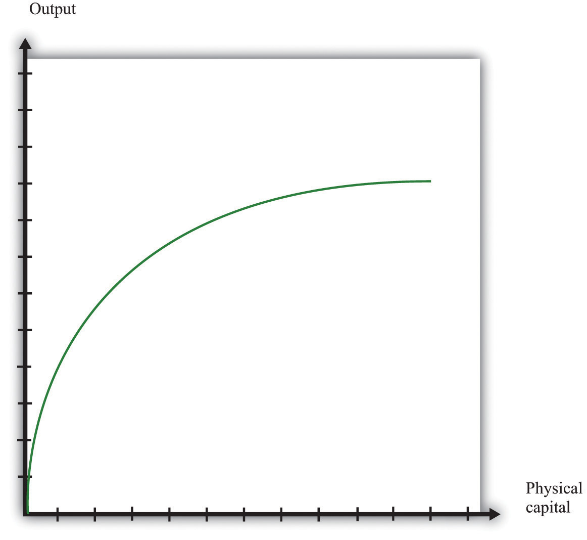
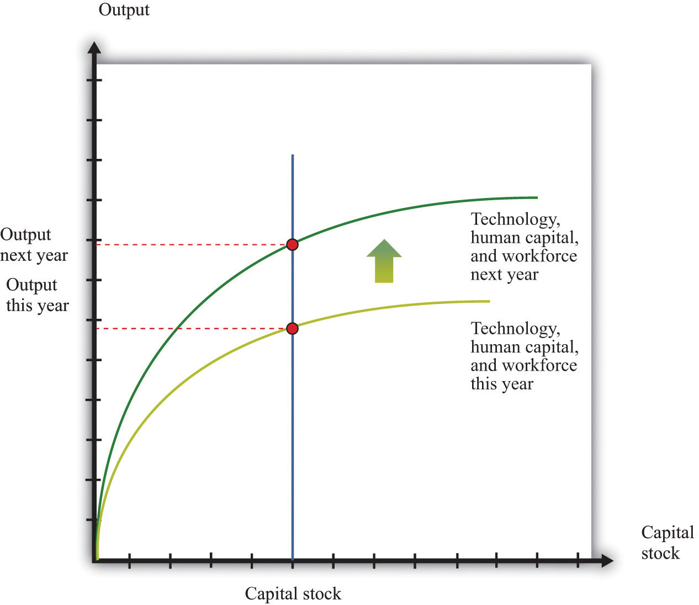

The aggregate production function describes how total real gross domestic product (real GDP) in an economy depends on available inputs. Aggregate output (real GDP) depends on the following:
We group the inputs other than labor, physical, and human capital together, and call them technology.
The aggregate production function has several key properties. First, output increases when there are increases in physical capital, labor, and natural resources. In other words, the marginal products of these inputs are all positive.
Second, the increase in output from adding more inputs is lower when we have more of a factor. This is called diminishing marginal product. That is,
In addition, increases in output can also come from increases in human capital, knowledge, and social infrastructure. In contrast to capital and labor, we do not assume that there are diminishing returns to human capital and technology. One reason is that we do not have a natural or an obvious measure for human capital, knowledge, or social infrastructure, whereas we do for labor and capital (hours of work and hours of capital usage).
Figure 31.19 shows the relationship between output and capital, holding fixed the level of other inputs. This figure shows two properties of the aggregate production function. As capital input is increased, output increases as well. But the change in output obtained by increasing the capital stock is lower when the capital stock is higher: this is the diminishing marginal product of capital.
Figure 31.19
In many applications, we want to understand how the aggregate production function responds to variations in the technology or other inputs. This is illustrated in Figure 31.20. An increase in, say, technology means that for a given level of the capital stock, more output is produced: the production function shifts upward as technology increases. Further, as technology increases, the production function is steeper: the increase in technology increases the marginal product of capital.
Figure 31.20
We can write the production function in mathematical form. We use Y to represent real GDP, K to represent the physical capital stock, L to represent labor, H to represent human capital, and A to represent technology (including natural resources). If we want to speak about production completely generally, then we can write Y = F(K,L,H,A). Here F() means “some function of.”
A lot of the time, economists work with a production function that has a specific mathematical form, yet is still reasonably simple:
Y = A × Ka × (L × H)(1 − a),where a is just a number. This is called a Cobb-Douglas production function. It turns out that this production function does a remarkably good job of summarizing aggregate production in the economy. In fact, we also know that we can describe production in actual economies quite well if we suppose that a = 1/3.